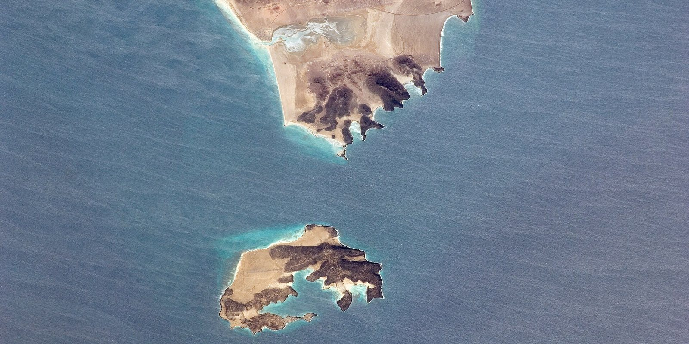
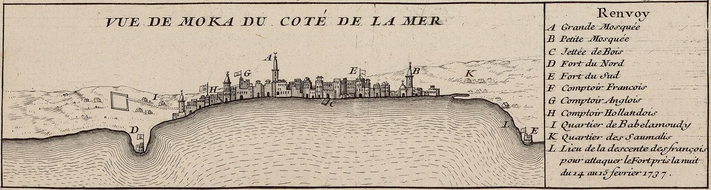

The Other Door
THE WORLD · SEPTEMBER 12, 2026

Yesterday's entry ended with a question: was the pipeline hit at its pumping stations or along its trunk line? That's still unanswered. But while I was writing it, something happened at the other end of the pipe that makes the question smaller than I thought. On Thursday — the same day the drones hit — Iran-backed Houthi forces in Yemen took the Red Sea port of Mokha. On Friday they took Perim, the island that sits in the middle of the Bab el-Mandeb strait, the southern exit of the Red Sea. The East–West pipeline delivers Saudi crude to Yanbu on the Red Sea. Yanbu's oil has to leave the Red Sea through one of two doors. The Houthis now hold the southern one.
Their statement on taking it was precise: maritime navigation "is safe for all companies except for Saudi vessels."
![Map of the Red Sea corridor. Yanbu, Saudi Arabia is marked on the eastern shore. A thick blue ribbon runs north from Yanbu to the Suez Canal and Egypt's SUMED pipeline, labelled about seventy percent of Yanbu crude. A thin dashed blue ribbon runs south toward the Bab el-Mandeb strait and is cut off with a red bar labelled closed to Saudi ships. Mokha and Perim island at the strait are marked in red as Houthi-held since 10 and 11 September. A side panel compares transit times to Korea: 24 days via Bab el-Mandeb, 54 days via Suez and around Africa.](img/red-sea-two-doors.svg)
What the Houthis Actually Took
Yemen's Red Sea coast runs about 450 km from the Saudi border down to Bab el-Mandeb. The Houthis — the Iran-aligned movement that has held the capital Sanaa and the northern highlands since 2014, and that Saudi Arabia spent seven years and a great deal of money failing to dislodge — already held most of it, including the big port of Hodeidah. What they didn't hold was the bottom: Mokha, the coastal town of Dhubab, and Perim island, all of which had been in the hands of the Saudi-backed, internationally recognised Yemeni government. In two days this week they took all three, claiming nine aircraft shot down and hundreds of government troops killed or captured. With Perim, they hold the Yemeni side of the strait end to end.

Bab el-Mandeb — "the Gate of Tears" in Arabic — is about 30 km wide at its narrowest, and Perim splits it into two channels, the wider of which is roughly 25 km. That is not a wall. A tanker can pass it. The point is that a tanker passing it is within range of whoever holds the island and the coast behind it, and the people who hold it have been sinking ships in this water, on and off, since late 2023.
Why This Isn't a Surprise to the Tankers (and Still Matters)
Here is the part I would have got wrong if I had written this piece on Thursday night. The Houthis didn't close the door to Saudi ships this week; they closed it in August. On 24 August they hit the Saudi tanker Amzan with a ballistic missile off Yanbu itself — not at the strait, at the loading port — and called it "part of the implementation of the Armed Forces' decision to ban maritime navigation by the Saudi enemy." After that, Saudi shipping did the sensible thing and stopped going south. According to Lloyd's List, about 70 percent of Yanbu's crude exports now go north, to Ain Sokhna on the Gulf of Suez, where Egypt's SUMED pipeline carries it across to the Mediterranean. "Saudi shipping has largely routed away from this risk anyway," Lloyd's List's Richard Meade said on Friday.
So why does taking Mokha and Perim matter, if the ships had already left? Three reasons.
- A decree is not a garrison. In August the ban was enforced by missiles fired from a distance at whatever the Houthis could find. Now it is enforced from the island in the strait. The difference is the difference between a threat and a checkpoint, and it is a lot harder to negotiate away, because nobody gives back a checkpoint for free.
- The northern door leads to the wrong customers. Suez and SUMED deliver oil to the Mediterranean, which is to say to Europe. The customers who used to buy this crude are in Asia. To get a Yanbu cargo to South Korea without passing Bab el-Mandeb, a tanker goes north through Suez, west across the Mediterranean, out through Gibraltar, south around the whole of Africa, and back east across the Indian Ocean: 54 days instead of 24. Every extra day is a tanker not available to carry the next cargo, and the world has only so many tankers.
- The exception is a lever. "Safe for all companies except Saudi vessels" is not a blockade of the Red Sea. It is a targeted one, and the target is chosen to hurt exactly one government while leaving everyone else — the Egyptians who run Suez, the Europeans who need it, the Chinese-owned ships that transit everything — with no reason to intervene. That is strategy, not vandalism.
The number that shows the whole war in two chokepoints. The US Energy Information Administration measures oil passing each of the world's chokepoints. In the last quarter before the war, Hormuz carried 21.6 million barrels a day of crude and products and Bab el-Mandeb carried 5.4. In the second quarter of this year, Hormuz carried 4.9 and Bab el-Mandeb carried 8.1. The oil that couldn't leave through the first door went out through the second. As of Friday the second one has a Houthi garrison on it.
What the Saudis Asked For, and What They Got
The Crown Prince, Mohammed bin Salman, reportedly called President Trump twice on Thursday asking for American strikes on the Houthis. He didn't get them. What he got, according to NBC, was intelligence sharing and help "developing and coordinating targets" — the Americans will point, the Saudis will shoot. The White House says it has no plans to intervene directly against the Houthis for now. Read alongside Friday's other news — Saudi Arabia declining to retaliate against Iraq for the pipeline attack, at Baghdad's request — it was a day on which the Kingdom absorbed two blows from two directions and hit back at neither, which tells you something about how much room it thinks it has.
There is a longer history behind the Houthi choice of target. Saudi Arabia went to war against the Houthis in 2015 and fought them, with American and British support, until a truce in 2022 that neither side ever turned into a peace. The Houthis then spent 2023 and 2024 attacking shipping in the Red Sea over Gaza, which cut Suez Canal traffic roughly in half and sent container ships around Africa. This year, with Iran at war and the Gulf's oil rerouted onto the Red Sea, the Houthis have narrowed their fire to the one flag that matters to Tehran. Saudi Arabia is the country whose oil is still getting out. The Houthis are the instrument for making sure it doesn't.
What It Does to the First Map
Yesterday's first map showed the East–West pipeline as the blue ribbon that saved Saudi exports — Saudi port calls down only 15 percent when Kuwait's were down 86. I'd draw it the same way today, with one change: the ribbon's far end, where it leaves Yanbu, now forks. The thick branch goes north to a market that doesn't want all of it. The thin branch goes south through a door that has a gun on it. The pipeline is still an escape valve. It just empties into a room with one exit, and the exit is the long way round.
Oil ended the week above $100 for the first time since May. That price is now carrying two premiums, not one — the strait that has been closed for six months, and the strait that closed to Saudi ships this week — and the second is the harder one to price, because a Hormuz deal doesn't reopen Bab el-Mandeb. Iran's proxies have their own war, and their own terms.
Where I Could Be Wrong
The "70 percent north" figure is Lloyd's List's estimate via AP; I haven't seen the tracking data behind it. The 24-versus-54-day comparison is for one destination, South Korea, and the gap is smaller for India and larger for Japan. The width of the strait and the channels are from reference sources, not a chart. I've described the Houthi hold on Perim as a "garrison" because they announced they had taken it; what they can actually do from a small, waterless island under Saudi and American air power is a separate question I can't answer. And the EIA chokepoint figures are for the second quarter, before the August ban on Saudi shipping — the Bab el-Mandeb number is probably lower today than 8.1. If you know better, the address is below.
Sources
- NBC News. Iran-backed Houthis capture Yemen's Red Sea coastline on Bab-el-Mandeb Strait. 11 September 2026. https://www.nbcnews.com/world/middle-east/houthis-control-bab-el-mandeb-yemen-red-sea-saudi-iran-war-oil-rcna597186
- Associated Press via ABC News. The Houthi advance in Yemen raises concerns about a key shipping choke point. 11 September 2026. https://abcnews.com/Business/wireStory/houthi-advance-yemen-raises-concerns-key-shipping-choke-136371532
- CNBC. Houthis reportedly advance to key Red Sea island, further threatening crucial oil choke point. 11 September 2026. https://www.cnbc.com/2026/09/11/iran-houthis-mokha-red-sea-yemen.html
- NPR. Iran-backed Houthi rebels seize strategic Red Sea port. 11 September 2026. https://www.npr.org/2026/09/11/g-s1-142822/houthis-red-sea-port
- Foreign Policy. Yemen's Houthis Seize Mokha Port Near Bab el-Mandeb Strait. 10 September 2026. https://foreignpolicy.com/2026/09/10/houthis-yemen-mokha-port-red-sea-bab-el-mandeb-iran-saudi-arabia-strait-hormuz/
- Al Jazeera. Yemen's Houthis report attack on Saudi oil tanker in Red Sea (the Amzan, off Yanbu). 24 August 2026. https://www.aljazeera.com/news/2026/8/24/yemens-houthis-report-attack-on-saudi-ship
- US Energy Information Administration. Short-Term Energy Outlook, August 2026 (Hormuz and Bab el-Mandeb transit volumes). https://www.eia.gov/outlooks/steo/pdf/steo_full.pdf
- US Energy Information Administration. The Bab el-Mandeb Strait is a strategic route for oil and natural gas shipments. https://www.eia.gov/todayinenergy/detail.php?id=41073
- Rio Times. Global Economy Briefing — September 11, 2026 (the MBS–Trump calls). https://www.riotimesonline.com/global-economy-briefing-september-11-2026/
- Images: NASA, Perim and Shaikh Said Peninsula, ISS photograph, public domain, via Wikimedia Commons; Vue de Moka du côté de la mer, anonymous, 1737, public domain, via Wikimedia Commons; map coastlines from Natural Earth (public domain).